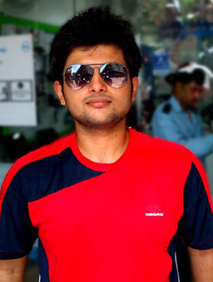

-

Hemant Kumar , Co-Founder An Ardent Technophile, Hemant is the mind behind WepSparx and a Computer Science Student. Hemant believes in bringing change. With technology at his side and his unrelenting attitude, he definitely will. ...
-
Shivam Bhalla , Co-Founder One of the most passionate people in the team, Shivam dedicates all his energy to finish what he starts. Shivam Bhalla is a dreamer. He is the sort who would go beyond lengths to make sure his dream becomes a reality....
-
Varun Joshi , Back-end Developer Being a B-Tech Computer science student, he knows backend like the back of his hand. Varun is a musician and a tech fanatic. Hence, he imagines his code to be a symphony, and finds harmony in it. ...
-
Satin Kriplani , Front-end Developer Satin doesn’t believe in ‘subtle’. In fact, he prefers knocking you out with his creative genius! Satin believes in creating impressions. He is also pursuing B-Tech. ...
-

Harin Raj , Graphics Designer If he sets his heart on something, he achieves it by any means possible. Harin is a hardworking person who follows his heart....